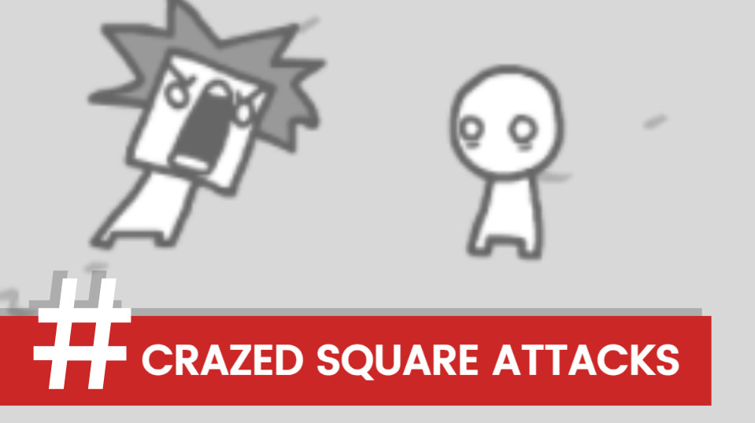
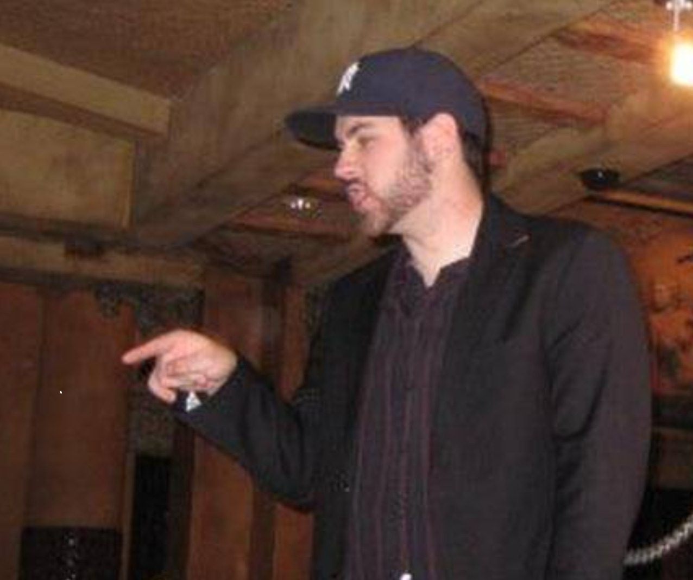
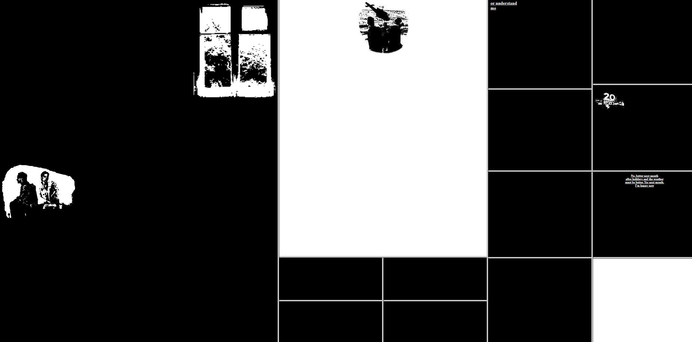

The exhibition titled The Action of the Click looks into the potential of the cursor being the predominant mechanism for both storytelling as well as social commentary throughout net art. The Action of the Click illustrates this through three examples of net art: We Become What We Behold, Pointer Pointer, and My Boyfriend Came Back From the War, in which the artist relies heavily on the user's interaction with the interface in order for the artworks to exist. What these three examples all have in common is that they rely on a point-and-click-type mechanism to activate or reveal new layers of the narrative; this can include both sensationalized news captured by the user and also fragments from various HTML frames. Each of these examples utilizes an aesthetic strategy that highlights the tension created between the viewer and his/her/their screen.
Although many works may simply present the act of clicking as a mechanical act of navigation through a webpage (e.g., clicking on a link), the artists in this exhibition use the click as an intentional act of becoming involved.

We Become What We Behold (2016)
Artist: Nicky Case
This interactive project allows players to interactively take pictures of characters by clicking on them, which demonstrates how media choices affect the social tensions created by the image and the viral effects of capturing those images.
View the work →

Pointer Pointer (2010)
Artist: Studio Moniker
Another project tracks your mouse cursor, and attempts to find a picture of a person in a specific location or pointing at where your cursor is, demonstrating the relationship between you as a user and the vast amount of archived web content from around the globe.
View the work →

My Boyfriend Came Back From the War (1996)
Artist: Olia Lialina
Typical net art project using browser frames, in a fragmented storytelling manner; each time you click, the window is split into smaller windows to represent the emotional distance away from the person.
View the work →